01 / 12
Откройте «Настройки»
Найдите и откройте приложение «Настройки» на iPhone или iPad.
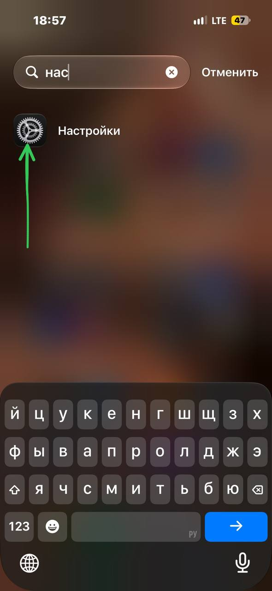
Без выхода из iCloud. В инструкции — три этапа и 12 точных скриншотов для iPhone и iPad.
Начать установкуДоступ к аккаунту действует 24 часа.
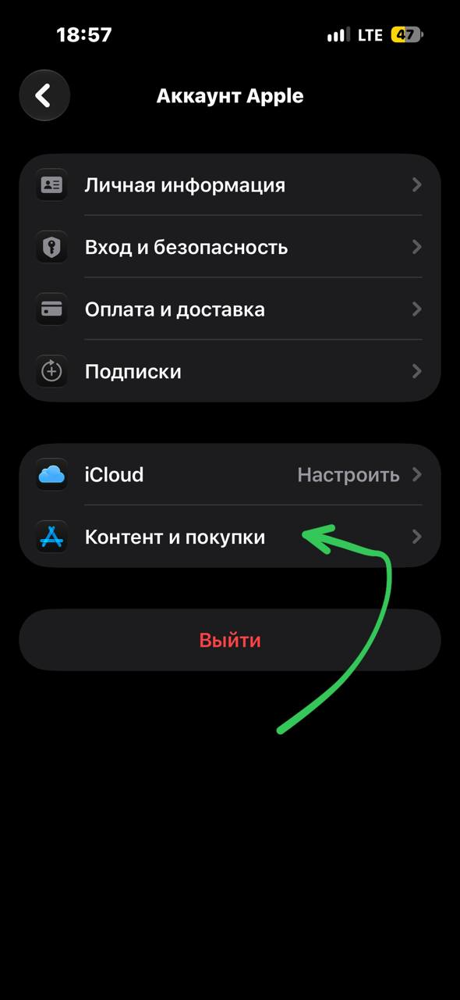
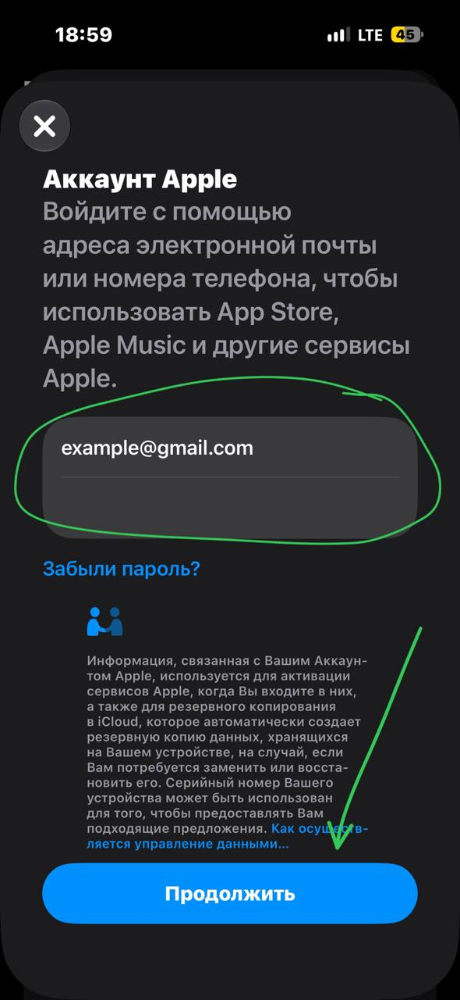
Не выходите из своего iCloud и не добавляйте туда временный аккаунт. Меняйте аккаунт только в разделе «Контент и покупки» или в App Store. На третьем шаге не нажимайте красную кнопку «Выйти» внизу страницы аккаунта Apple.
Названия кнопок могут немного отличаться в других версиях iOS и iPadOS.
Ваш iCloud останется на устройстве. Следуйте отмеченному пути на скриншотах.
Найдите и откройте приложение «Настройки» на iPhone или iPad.

Вверху настроек откройте строку со своим именем или аватаром.
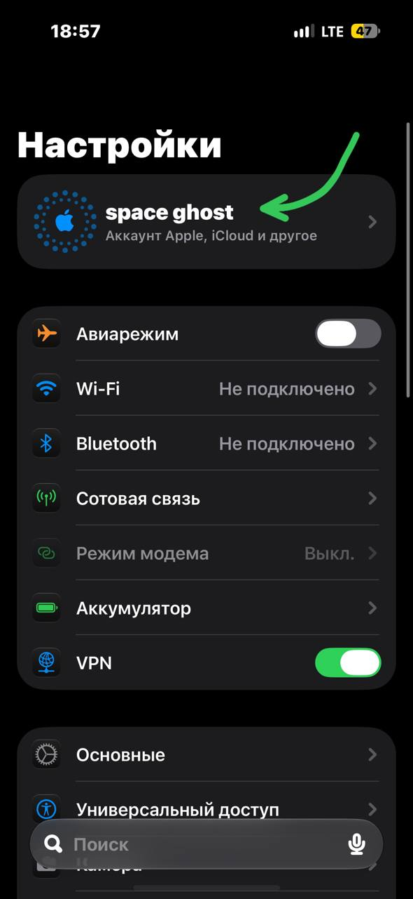
Нажмите «Контент и покупки». Не нажимайте красную кнопку «Выйти» внизу: она относится ко всему аккаунту устройства.
На следующем экране нажмите «Выйти» в правом верхнем углу.
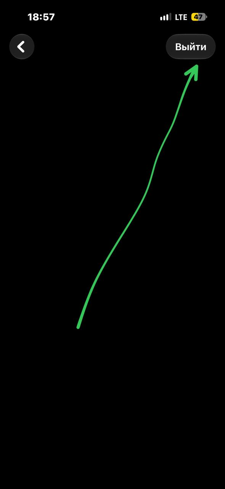
В появившемся окне нажмите «Выйти». Сеанс App Store завершится, а ваш iCloud останется на устройстве.
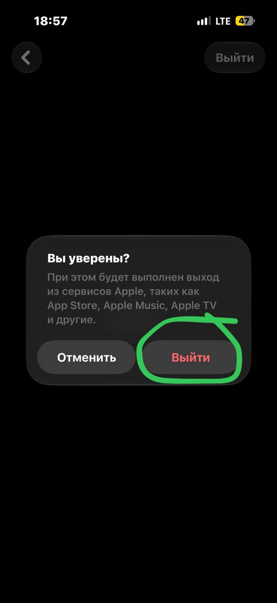
Используйте логин и пароль, полученные после оплаты заказа.
Найдите и откройте приложение App Store.
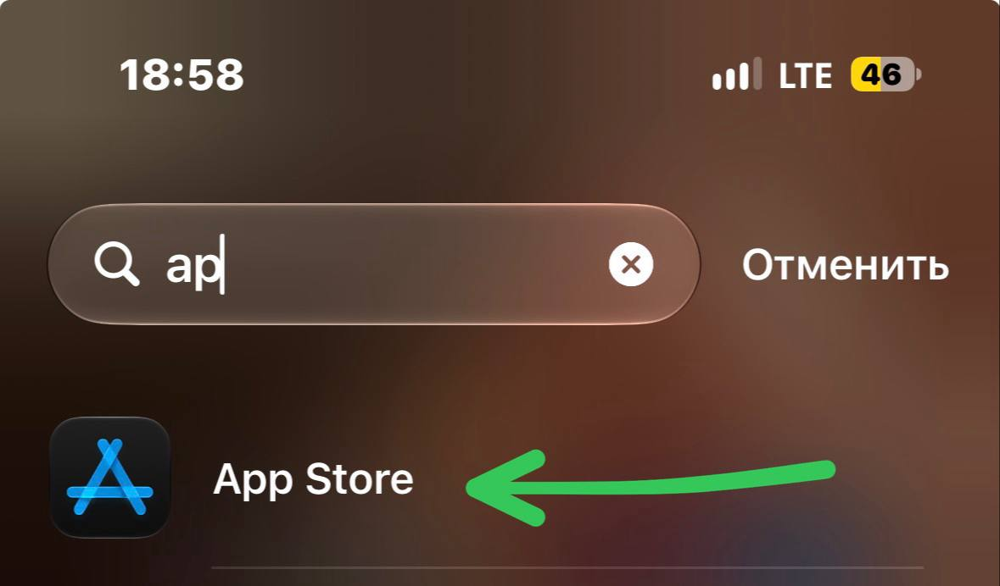
В правом верхнем углу App Store нажмите круглый значок аккаунта.
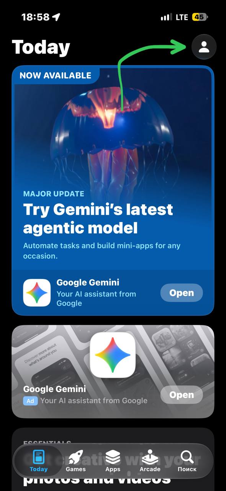
На экране аккаунта нажмите «Вход в Аккаунт Apple» или «Apple Account Sign In».
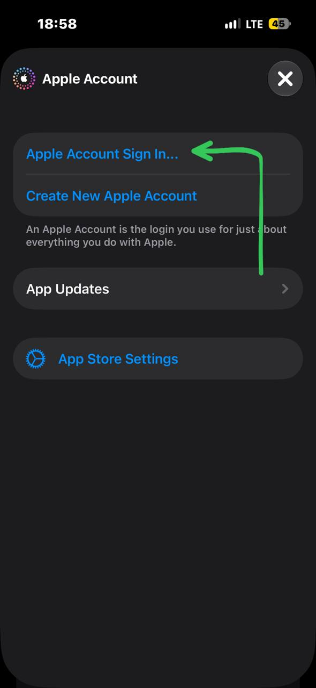
Если iPhone предлагает использовать личный Apple ID, нажмите «Не [ваш Apple ID]?» и введите данные из заказа.
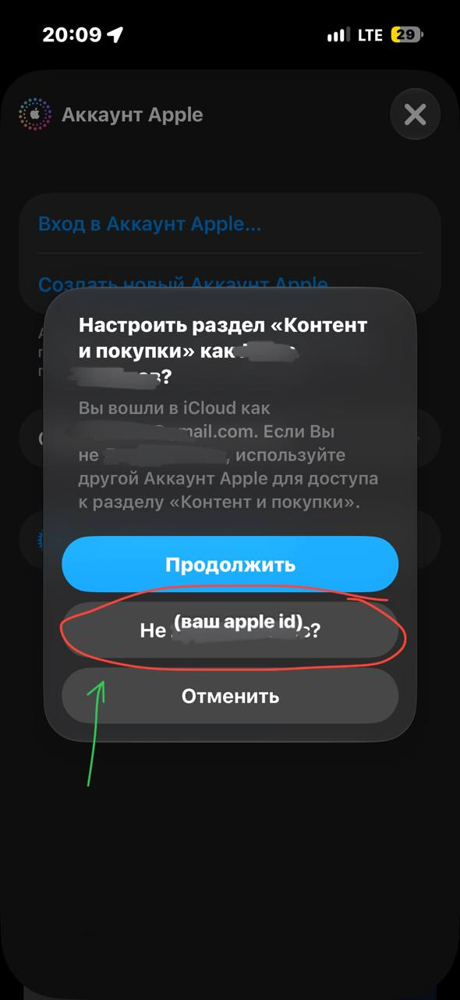
Укажите логин и пароль временного аккаунта и нажмите «Продолжить». Вводите их только в окне App Store.
После входа откройте список приложений, связанных с аккаунтом.
На странице аккаунта нажмите «Приложения и история покупок».
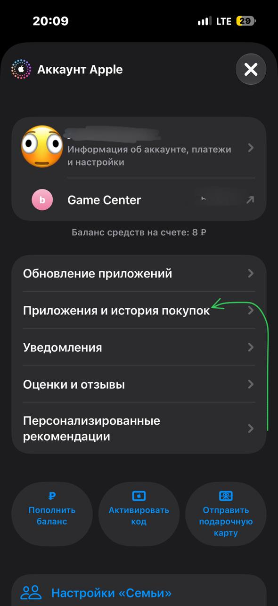
Нажмите «История покупок».
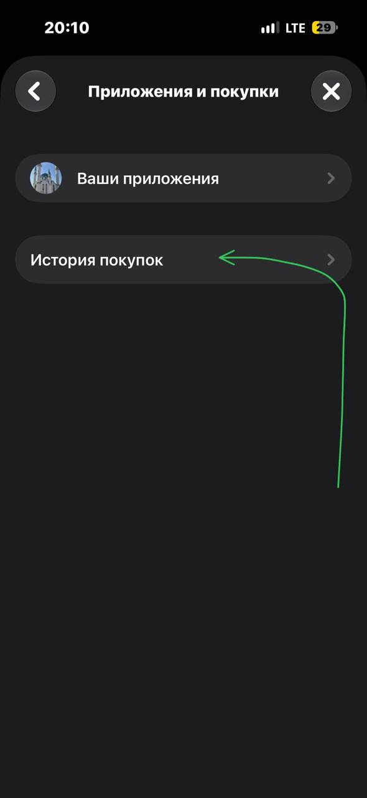
Доступ предоставляется временно, только для установки игры через App Store.
Не меняйте логин, пароль и настройки общего аккаунта.
Не покупайте через него игры, дополнения и другие товары.
Не входите с ним в iCloud и не передавайте данные другим людям.
Напишите в чат заказа и приложите скриншот экрана, на котором остановились. Поддержка отвечает ежедневно с 08:00 до 00:00.
Проверить шаги